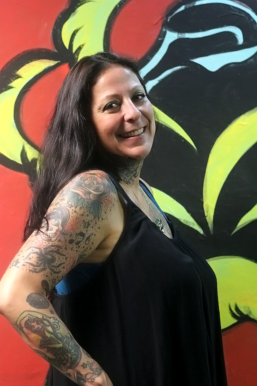

American Ink Tattoo Company and Supply was founded in 2017. The shop was formerly Heart and Soul Tattoo Studio founded in 2011 by resident artist George Boogyd Dungan. It quickly became very successful studio right in the heart of OKC.
Life changes had George considering focusing more on his tattoo art than the business end of the industry, since it did take much time away from actually being able to draw and paint in addition to tattooing.
Lisa McGuinness, a local professional in the music industry, was ready for a change in life. She purchased the studio in 2016 and kept the name Heart and Soul for about a year. The shop then relocated, and merged with a tattoo supply company also owned by McGuinness.
Artists
For a year now we have been growing as a family and making tattoo dreams come true daily. We have 6 artists in house.
George Boogyd Dungan
17 years experience
"Be inspired by everything."
This is me, Boogy D. I'm a local tattoo artist in Oklahoma City, Oklahoma. I have been tattooing for about 17 years. I am a state licensed tattoo artist, and have been creating art my whole life. My style has been influenced by everyday living and from my fellow peers and artists worldwide. I have worked all over Oklahoma City and tour around America in the tattoo convention scene.
I am into creating something personal for my customers. I have a variety of styles, ranging from black and grey, to traditional, realism, horror, cartoon, alternative, skateboard and religious themes. I love keeping with my customer's vision and idea for their tattoo, while presenting them in a way that compliments the skin so the idea can come to life. I am always up for a challenge and try to be very informed on culture and custom creative tattoo styles. Thank you for visiting our site, and I look forward to tattooing whatever your heart desires soon!
Marv Stanfill
11 years experience
I was raised in Western Oklahoma and have lived in Oklahoma City since 1992 with a few years in Denver and Dallas in between. I have been drawing and painting for as long as I can remember. I think like most children my first intro to art was comic books and cartoons. I remember spending hours drawing page after page of primitive marker renderings of superheros and Star Wars characters. I've had some formal training in college, but am primarily self-taught.
I have been tattooing now for 13 years. I am influenced by a lot of surrealist and classical painters as well as tattoo artists like Victor Portugal, Bob Tyrell, Liz Cook and hundreds of others I can't even name.
Currently, I think I have the most fun with creating tattoos that mix traditional and abstract elements like random geometry, drips, watercolor, etc. It would be my pleasure to design your next original piece. Feel free to shoot me a text at 405-626-7110 for appointments, or message me on the American Ink Tattoo Co. Facebook page.
Eddy Gibb
10 years
Born and raised in San Antonio Texas. Growing up in a big city it was easy to find my own way of expressing myself as an artist. From having formal paint exhibits with oils and acrylic, to painting walls, trains and freeway underpasses.
Ten years ago a friend gave me my first machine. I fell in love, and believe it’s an honor and privilege to have someone let me permanently add my art to their body. I take a lot of pride in knowing that people trust my skills as and artist, and I will always do my best to give someone something they are proud of. So, with that being said, I will always continue to push and grow as an tattoo artist.
I enjoy doing all styles of tattooing, whether it's traditional, new school, realism, trash polka, or abstract, and I always look forward to the challenge of covering up unwanted tattoos!

Tony Beasley
13 years
Tony B is a Oklahoma Native who starting tattooing after his service in the Army. He is award winning, has been tattooing for 14years and skilled in all styles.


Roberto Escobar
My name is Roberto Escobar, I have enjoyed drawing since I was young. I remember always getting in trouble for drawing in church and school. I took an art class in highschool, and while it was fun to learn new mediums, pencil and paper has always been my favorite.
I've always had older cousins and friends with really cool tattoos. Several of them told me I should get into tattooing, since I like to draw so much. I wasn't sure I was good enough, but I went for it anwyay. After some time searching, I got in touch with Lisa, and Boog agreed to take me on as an apprentice.
My apprenticeship has been awesome, and I've really enjoyed learning from everyone in the shop. My favorite style to tattoo is black and grey, but I've been getting into color lately. I'm a graduate apprentice, and I plan to continue learning everyday.
Some of my inspirations are Freddy Negrete, Mark Mahoney, Franco Vascovi, Flaks, Sir Twice, Fonzy, bob Tyrrel, Mr. Cartoon and more. One day I hope to be able to travel the world doing what I love, just like I've seen them doing.
Products


Address
3005 N May Ave, Oklahoma City, OK 73107
Hours
Mon-Fri
10:00am to 10:00pm
animalsinkstop@yahoo.com